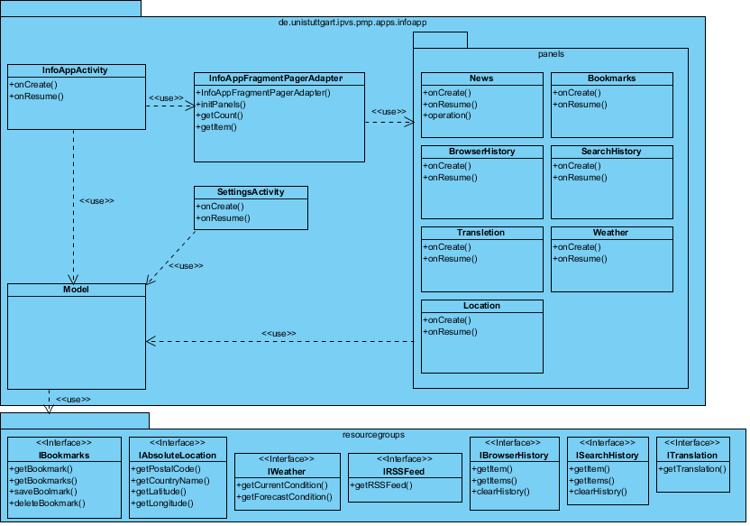

Versionshistorie
Version 3.1 (08.02.2012)
- Erstes Gerüst des Entwurfs
Version 3.2 (10.02.2012)
- Klassendiagramm hinzugefügt
Version 3.3 (15.02.2012)
- Verbesserungen nach der Begutachtung vorgenommen
Version 3.4 (24.02.2012)
- Klassendiagramm bearbeitet
Einleitung
Die entworfene Software dient als eine Beispielapp, die die Funktionen der PMP bezüglich des Umgangs mit vielen Ressourcen demonstriert.
Die Software ist reine Demonstrationsapp und soll keine ausgefallene Oberfläche besitzen, jedoch hässlich soll sie auch nicht werden. Dafür soll sie viele Ressourcengruppen gemeinsam mit der PMP verwenden.
In erster Linie soll die Funktionalität der Software sichergestellt werden, sodass die zusätzlichen Ressourcengruppen im Nachhinein hinzugefügt werden.
Entwurfsprinzipien
Die Software ist eine Informations-App. Somit wird diese hauptsächlich die Informationen aus dem Internet beziehen und diese dem Benutzer anzeigen. Die Hauptquelle werden die diversen RSS-Feeds sein. Der Benutzer wird in der Lage sein die Informationen der InfoApp einstellen zu können, was er mit Hilfe von PMP erreichen können wird.
Architektur
Das System ist in die drei Komponenten UserInterface, ResourceGroupe und Model untergliedert. Der Zugriff auf die Komponenten erfolgt über die entsprechenden Klassen. Die von PMP zur Verfügung gestellten und mit der InfoApp gemeinsam genutzten Ressourcen-Gruppen werden auch über die entsprechende Klassen gesteuert. Weitere Schnittstellen zwischen den Komponenten gibt es nicht.
Komponenten
Die folgenden Abschnitte beschreiben die Komponenten der Anwendung, deren Schnittstellen, ihren Aufbau und ihre Funktion. Die Beschreibungen legen den Schwerpunkt auf die Erklärung der Konzepte und Ideen, die hinter den Komponenten und ihrer Funktionsweise stecken.
UserInterface
Die graphische Benutzungsschnittstelle besteht im Wesentlichen aus wenigen Activitys-Fenstern, die die gewünschten Informationen anbieten werden. Diese Activity-Fenster wird man durch eine Wisch-Geste auf dem Bildschirm umschalten können. Auf die Funktionen der Schnittstelle wird über die entsprechende UI-Klasse zugegriffen.
ResourceGroupe
Die Komponente ResourceGroupe implementiert die Möglichkeiten manche Informationsbereiche individuell einstellen zu können. Dabei wird man in der SettingsActivity die Einstellungen vornehmen können.
Model
Model holt die notwendigen Ressourcengruppen und stellt diese zur Darstellung der Informationspanels dem UserInterface zu verfügung.
Klassendiagramm

Die Klasse Model steuert die InfoApp. Die Klasse InfoAppActivity implementiert die Hauptactivity der InfoApp. Diese ermöglicht die Darstellung aller Informationspanels der InfoApp in sich. Ein Panel wird vom Benutzer als das Startpanel ausgesucht. Als Beispiel eines Informationpanels kann man im Diagramm das Panel News mit der zugehörigen RG IRSSFeed betrachten. Auf dieselbe Art werden alle Ressourcen-Gruppen der InfoApp im System eingebunden. Die Klasse SettingsActivity implementiert die Einstellungen der InfoApp. Die letzte Klasse InfoAppFragmentPagerAdapter ermöglicht das Wechseln zwischen den Panels durch eine Wisch-Geste auf dem Bildschirm.